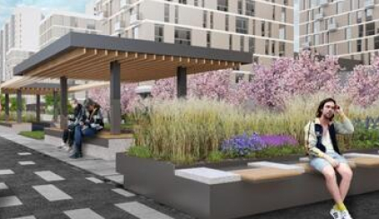
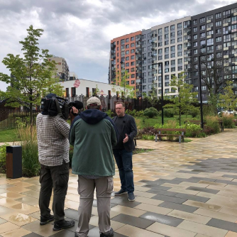
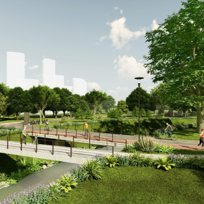
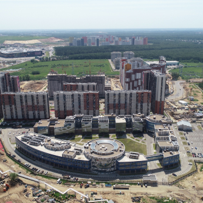

Карта идей
для генплана Екатеринбурга
Голосуйте за актуальные идеи и предлагайте свои
СБОР ИДЕЙ ЗАВЕРШЕН
За время работы карты 307 человек опубликовали 644 идеи. 191 предложение уже учтено в проекте генерального плана, 209 идей приняты специалистами Института Генплана в работу. Остальные идеи касались вопросов и тем, не входящих в предмет разработки генерального плана. Например: организация тротуаров и пешеходных переходов, настил газонов, режим работы светофоров, режимы деятельности организаций и эксплуатация сооружений. Эти предложения будут направлены для рассмотрения в Администрацию Уфы.
Благодарим всех, кто оставил предложения на интерактивной карте.
Более подробно о проекте можно узнать на соответствующей странице.
Оставьте идею на карте. давайте сделаем город лучше
Популярные идеи
 # Общественные пространства
# Общественные пространстваСовременная детская площадка
Проблема в том, что в этом парке нет элементарного пешеходного покрытия и нет освещения
- # Общественные пространства
Функциональное пространство
Не плохо было бы убрать тюрьму подальше от цента.А большая часть завода давно
- # Общественные пространства
РАСШИРЕНИЕ ДОРОЖНЫЙ ИНФРАСТРУКТУРЫ
Сегодня апрель 2021 года. Единственная дорога в город в одну полосу в одном
ПУБЛИКАЦИИ И ДОПОЛНИТЕЛЬНЫЕ МАТЕРИАЛЫ
- 
Разработкой мастер-плана Казанской агломерации займется Институт Генплана
В 2023 году стоит задача подготовить мастер-план Казанской агломерации. Об этом заявил директор Института пространственного планирования РТ. - 
Город, комфортный для жизни с собаками
29 марта в 17:00 состоится очередная лекция онлайн-лектория Института Генплана. Урбанист Артем Гебелев расскажет о том, что такое город, комфортный для жизни с собаками. - 
Что такое комплексное развитие по-московски?
Комплексное развитие территории (КРТ) – один из ключевых градостроительных принципов в Москве. Что это значит на практике, рассказали эксперты в сюжете РБК
О проекте
Что такое карта идей
Карта идей — совместный проект Москомархитектуры и Института Генплана Москвы. Карта идей помогает собрать идеи местных жителей по улучшению города.
Почему мы собираем идеи
Мы уверены, что идеи жителей города уникальны и хотим, чтобы локальные идеи были оставлены на карте. Эти идеи будут учтены при разработке проектов по развитию города.
Какие идеи мы ждем
На карте вы можете сообщить нам о нехватке детских садов, рекреационных пространств, пробках и даже собственном видении экономических перспектив города.
Как работает карта идей
Вы сохраняете идею на карте под соответствующей категорией, после модерации идея появляется на карте. После окончания сбора идей на карте, разработчики мастерплана города изучают идеи и учитывают их при разработке своих проектов. Просим при описании идеи выбирать корректные категории идей. Если вы не нашли подходящей категории, но вам важно высказаться, — выберите категорию «Другое».